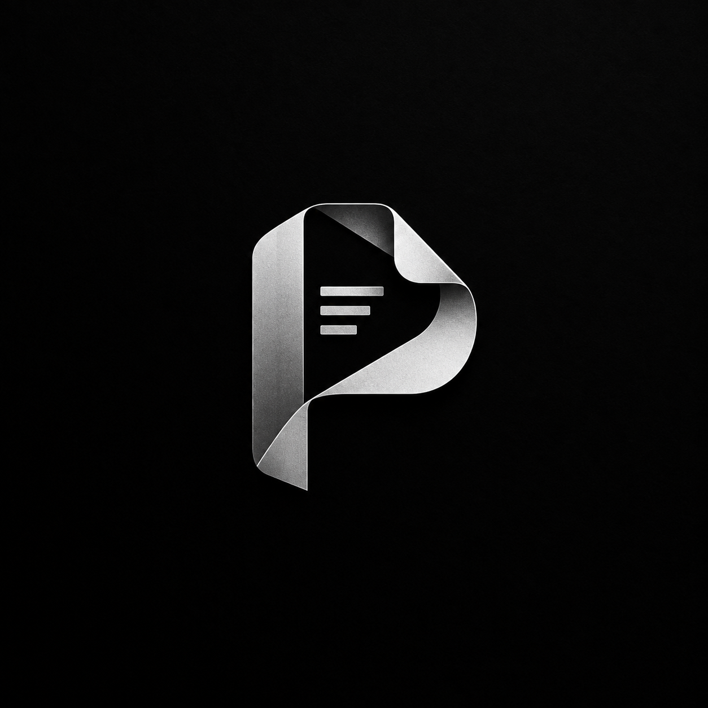

همهی پایهها و همهی کتابها، کاملاً آفلاین — با قلم، هایلایتر، پرندهی نامهرسان و ساعت تمرکز. بدون نیاز به اینترنت، بدون نیاز به هیچ چیز دیگر.
روی هر درس کلیک کن تا کتابش باز شود — کاور هر درس، چهرهی یکی از بزرگان همان دانش است ✨
در حال باز کردن کتاب…
روی نقطهی ۱ از ۴ (گوشه) کلیک کن — همانجایی که تصویر روی تخته تمام میشود.
۲۵ دقیقه تمرکز، ۵ دقیقه استراحت — پرندهها تشویقت میکنند!
…
بدون نیاز به ثبتنام یا حساب کاربری — سرورها را میسنحیم…
اگر دانلود شروع نشد، دکمهی سرور دیگر را بزن. فایل حدود … است.